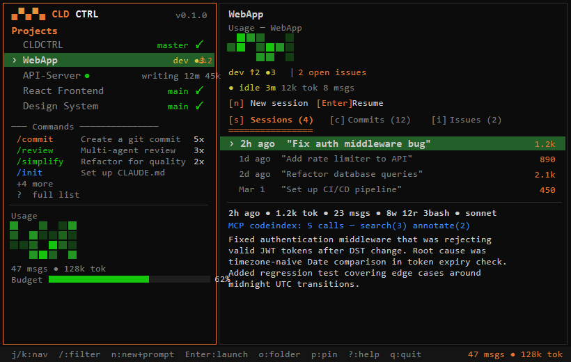

CLD CTRL
Mission control for Claude Code
Track sessions, monitor spending, and manage every project from one terminal dashboard. Auto-discovers your existing history — zero config.

Session Intelligence
Every conversation, every tool call, every token — across all your projects. See what Claude did, what it cost, and resume any session instantly.
Cost & Usage Visibility
Real-time rate limit tracking with 5-hour and 7-day rolling windows, tier detection, overage alerts, and per-session cost estimates.
Zero Config
Install, run, done. Auto-discovers every project from your Claude Code history. No config files, no manual setup, no maintenance.
Also includes
Everything else you'd expect
Project Launcher
Open file explorer, VS Code, and Claude Code in one action. No more hunting through directories.
Git Status
Branch, uncommitted changes, unpushed commits, and behind count shown inline for every project.
GitHub Issues
Open issues per project. Launch Claude Code with "fix issue" prompts directly from the dashboard.
File Browser
Browse project files in the dashboard. Lazy directory tree with .gitignore support, type icons, and VS Code integration.
Keyboard-First
Vim-style navigation — j/k, g/G, Ctrl+d/u, / to filter. Built for speed.
Cross-Platform
Windows, macOS, and Linux. Platform-specific terminal detection and hotkey setup for each OS.
Keyboard-driven
No mouse required
Navigation
| j k | Navigate projects |
| g G | Jump to top / bottom |
| Ctrl+d | Half-page down |
| Ctrl+u | Half-page up |
| Tab | Switch pane focus |
| / | Filter projects |
| ? | Help overlay |
Actions
| n | New Claude Code session |
| c | Continue last session |
| o | Open in file explorer |
| p | Pin / unpin project |
| r | Refresh projects |
| S | Scan for new projects |
| , | Settings |
Install
Up and running in 60 seconds
Install from npm
npm i -g cldctrl
Also works with npx cldctrl if you prefer not to install globally.
Launch the dashboard
Run cldctrl (or the shorter alias cld). If you've used Claude Code before, your projects appear automatically.
cldctrl # full dashboard cldctrl list # list projects (CLI) cldctrl stats # usage statistics
On first run, CLD CTRL checks your environment and auto-discovers projects from ~/.claude/projects. No configuration needed.
Requirements
CLD CTRL is an open-source community project — not affiliated with Anthropic. It reads your local Claude Code session data (read-only) and never sends data to external servers.